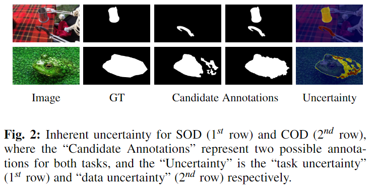
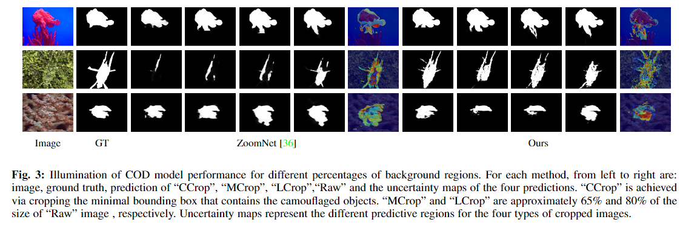

1Northwestern Polytechnical University, China
2Australian National University, Australia
3IVRL, EPFL, Switzerland
4Shanghai AI Laboratory, China
Salient objects attract human attention, which usually stand out clearly from their surroundings. In contrast, camouflaged objects share similar colors or textures with the environment. In this case, salient objects are typically non-camouflaged, and camouflaged objects are usually not salient. Due to this inherent \enquote{contradictory} attribute,we introduce an uncertainty-aware learning pipeline to extensively explore the contradictory information of salient object detection (SOD) and camouflaged object detection (COD) via data-level and task-wise contradiction modeling. We first exploit the \enquote{dataset correlation} of these two tasks and claim that the easy samples in the COD dataset can serve as hard samples for SOD to improve the robustness of the SOD model. Based on the assumption that these two models should lead to activation maps highlighting different regions of the same input image, we further introduce a \enquote{contrastive} module with a joint-task contrastive learning framework to explicitly model the contradictory attributes of these two tasks. Different from conventional intra-task contrastive learning for unsupervised representation learning, our \enquote{contrastive} module is designed to model the task-wise correlation, leading to cross-task representation learning. To better understand the two tasks from uncertainty's perspective, we extensively investigate the uncertainty estimation techniques for modeling \enquote{task uncertainty} (for SOD) and \enquote{data uncertainty} (for COD), aiming to effectively estimate the challenging regions for each task to achieve difficulty-aware learning. Experimental results on benchmark datasets demonstrate that our solution leads to both state-of-the-art performance and informative uncertainty estimation.
(1)To achieve data-wise correlation modeling, we introduce data interaction as data augmentation by defining the easy samples from COD as hard samples for SOD, achieving contradiction modeling from the dataset perspective. As shown in figure above, typical camouflaged objects are never salient, but samples in the middle can be defined as hard samples for SOD.
(2)Besides the contradictory relationship modeling, we also observe two types of uncertainty for SOD and COD respectively.
(3)Besides investigating the conventional uncertainty modeling techniques, we find the performance of COD is sensitive to the size of camouflaged objects. To explain this, we crop the foreground camouflaged objects with different percentages of background, and show their corresponding prediction maps and uncertainty maps . We observe that the cropping based prediction uncertainty, \ie~variance of multiple predictions, is relatively consistent with region-level detectability of the camouflaged objects, validating that performance of the model can be influenced by the complexity of the background.
Overview of the proposed uncertainty-aware joint learning network. The \enquote{Feature Encoders} for SOD $E_{\alpha_{s}}$ and COD $E_{\alpha_{c}}$ are used to extract independent feature representation $F_{\alpha_{s}}$ and $F_{\alpha_{c}}$, respectively. Given the feature representation of auxiliary image $X^p$, the contrastive module $\mathit{Ctrs}_{\theta}$ is presented to model the contradicting attributes of SOD and COD, achieving effective multi-task learning, and based on which the \enquote{Prediction Decoders} $G_{\beta}$ share weights to produce fine-grained SOD prediction $P_{s}$ and COD prediction $P_{c}$. As an adversarial learning network, we extract confidence indicators from the two discriminators $D_{\gamma_{s}}$ and $D_{\gamma_{c}}$ for uncertainty-aware learning to distinguish the prediction from the ground truth.
@InProceedings{Li_2023_UJSCOD,
author = {Li, Aixuan and Zhang, Jing and Lv, Yunqiu and Zhang, Tong and Zhong, Yiran and Yiran Zhong and Dai, Yuchao},
title = {Joint Salient Object Detection and Camouflaged Object Detection via Uncertainty-aware Learning},
year = {2023}
}